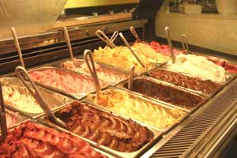

1.- Lado Bueno
Con apenas 12 años, esta heladería pinta para leyenda. El secreto de su éxito: los extras, como nueces, frutillas, merengues o Rocklets, que se siembran generosamente al momento de servir. Las almendras, acarameladas y tostadas. Ni hablar del Maracuyá, el Dulce de leche bombón o la Tarta de manzana. De Paternal se expandió a Villa del Parque y Belgrano. Está para conquistar el mundo.
(Artigas 1802 (Paternal) y sucursales / T. 4585-5050)
2.- Monte Olivia

¡Qué esquina! Dan ganas de tener toda la vida para sentarse y probar sus más de 60 sabores mirando la plaza de Villa Devoto. Con 43 años en el barrio, Monte Olivia tiene la vaca atada. Difícil competir contra ese cucurucho de Chocolate amargo y Mousse de limón. O contra el encanto de ese local en forma de U donde en verano la gente espera hasta 50 minutos sin chistar.
(Fernández de Enciso 3999, Villa Devoto / T. 4504-4050)
3.- El Piave
Los vecinos de Wilde lo saben desde 1955: El Piave la rompe. También lo supieron (tiempo más tarde) en Pinamar y en Villa Gesell. Locales grandes, con patios para pasarse la tarde entera. Helados de delirio. Los de siempre y también de Kiwi, Ananá al champagne, Arroz con leche, Mousse de frambuesa, Lemoncello. y el Dulce de leche della nonna, con brownies bañados en Tía María y dulce de leche casero.
(Av. Mitre 6282 (Wilde) y sucursales / T. 4207-3971)
4.- Daniel
Daniel Paradiso es un innovador. Se ve que siempre fue un adicto al quiosco, y lo llevó a sus helados, donde patentó los de alfajor de chocolate (por no decir alfajor Havanna. es igualito, igualito), Bananita (¡Dolca!), Danicol (Mantecol, en términos egocéntricos). La gente del Norte jura que fue el primero en ofrecer estas fusiones de golosina con helado. Sus doce locales ya llegaron desde el norte hasta Núñez, pero el posta, posta, está en Victoria. Es el orgullo de Daniel y tiene hasta juegos para chicos. Y de paso: precios muy competitivos, eh.
(Pte. Perón 3374 (Victoria) y sucursales / T. 4746-6006)
5.- Peppino di Napoli
Una buena al salir de la oficina: pasar por Peppino y llevarse un cuarto de Chocolate a la naranja para comer en el subte. Los sufridos mártires del microcentro se merecen un buen helado de Bailey´s de esta heladería chiquita, discreta, contundente, que lleva 42 años en ese local de pisos de mármol y mesitas redondas. El auténtico Peppino era José Ragozzino, tano, de Nápoles por supuesto. Hoy atiende su amigo Nino. Peppino tiene también otro local en esa zona que ahora algunos llaman "altos de San Telmo".
(Carlos Pellegrini 787 y Tacuarí 1092, Centro / T. 4394-0660)